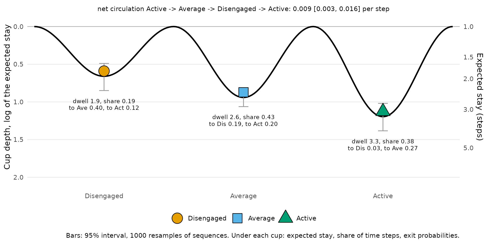
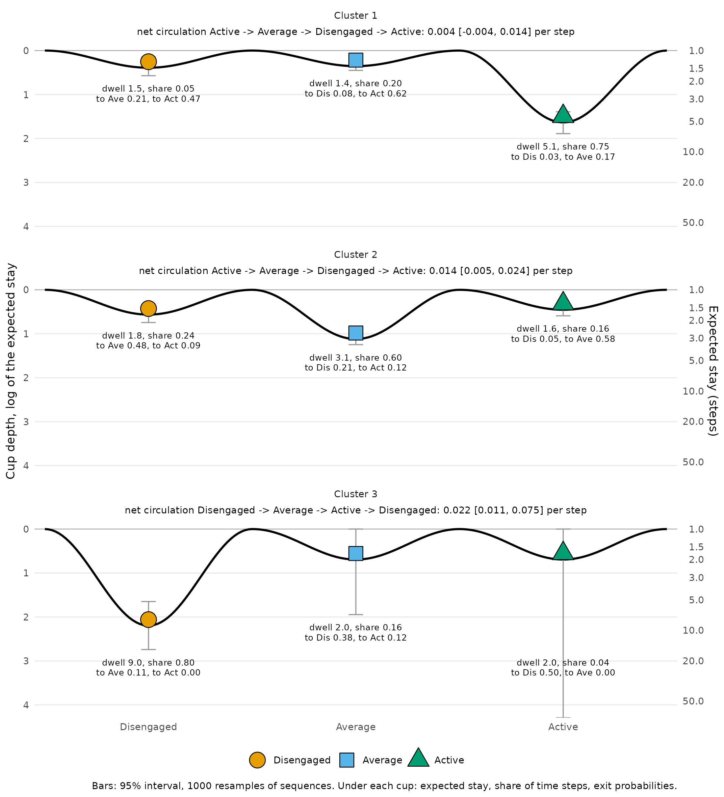
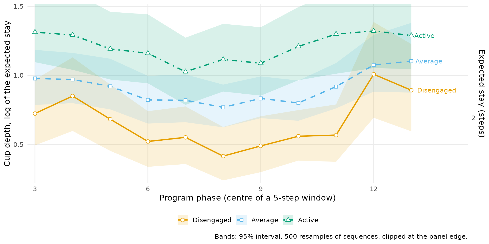
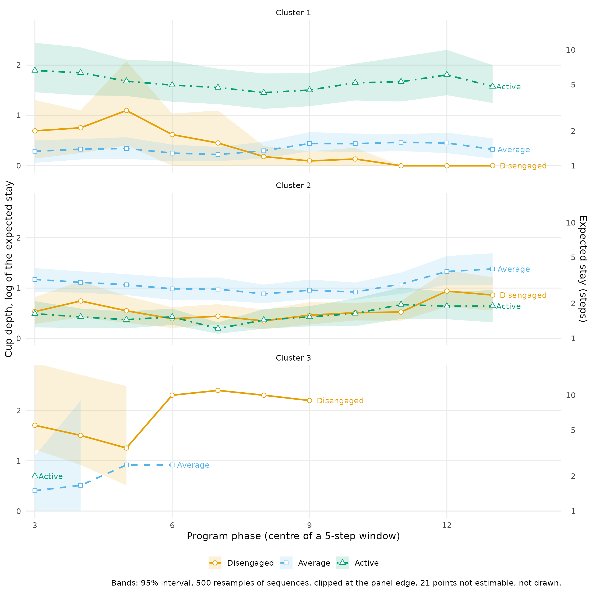
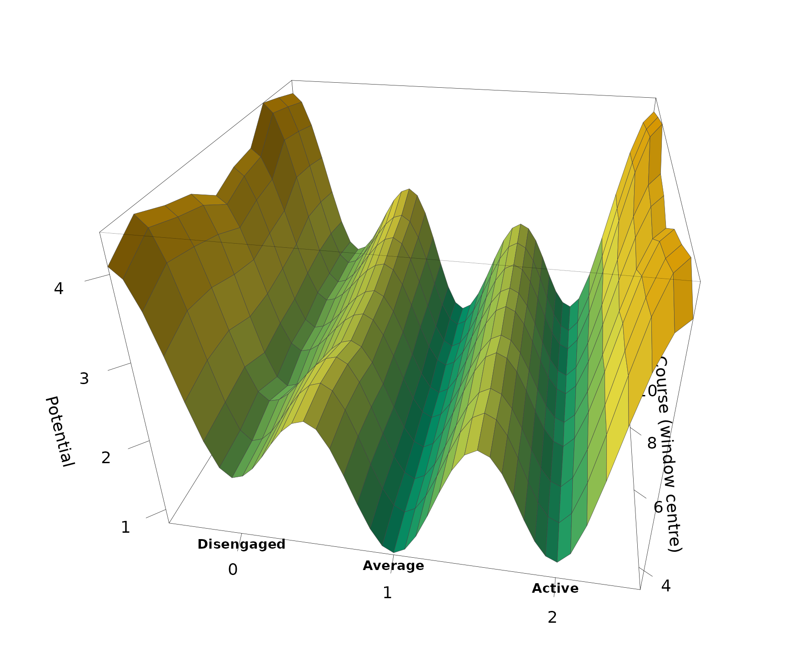
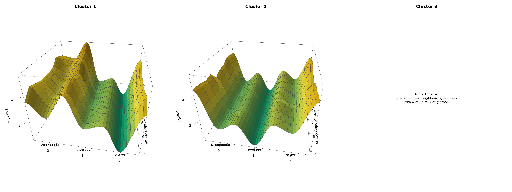
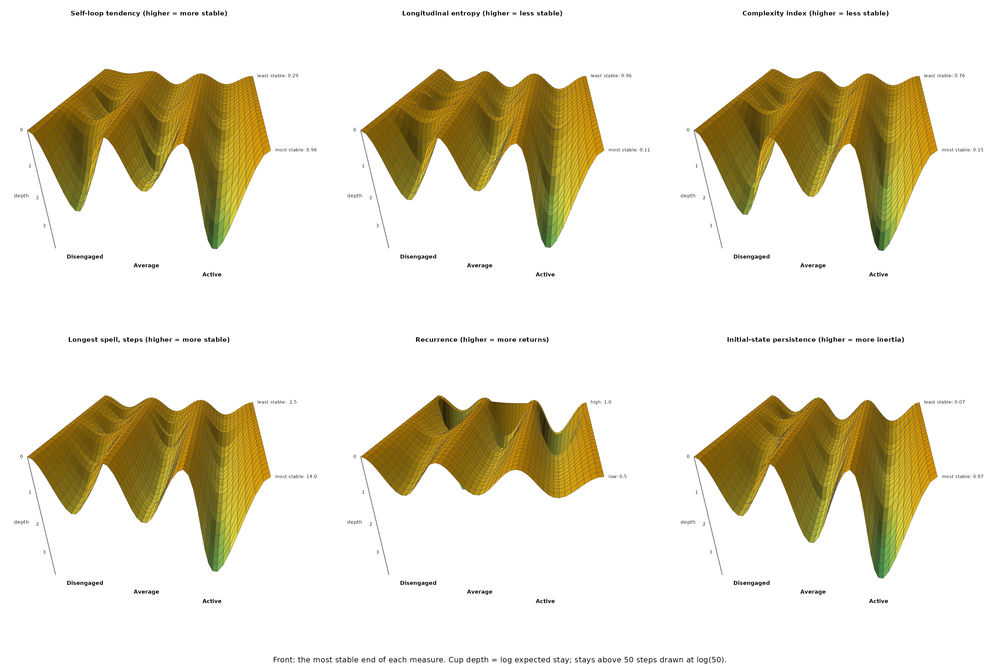
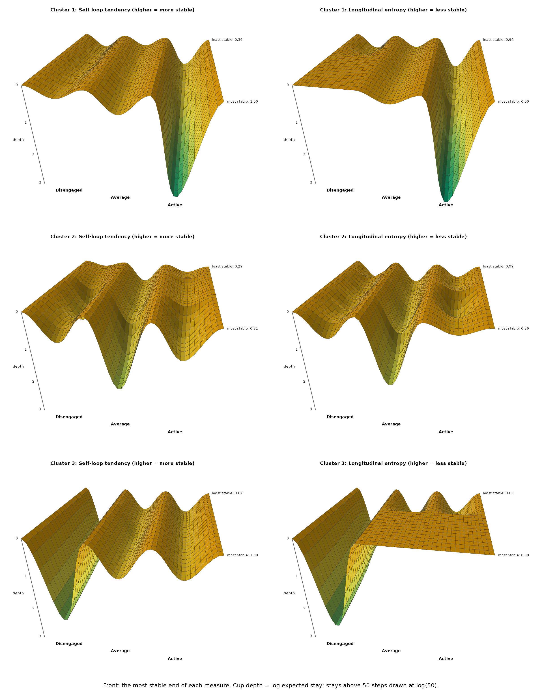

Stability landscapes of engagement (experimental)
Source:vignettes/articles/stability-landscapes.Rmd
stability-landscapes.RmdExperimental. stability_landscape(),
landscape_trend() and landscape_surface() are
new in Nestimate 1.0.1; their arguments and output may change in later
releases.
Which engagement states are stable, which are easy to leave, and do students with different trajectories live in different landscapes? A stability landscape answers these questions by drawing the transition network as a ball in a set of cups (Scheffer et al. 2009). The depth of a cup is how long students stay in the state once they are there: a deep cup holds the ball, a shallow one lets it roll out at the next step.
The data are trajectories: the engagement state of 138
students in each of 15 consecutive courses, coded
Disengaged, Average or Active. A
missing value marks a course the student did not take; most missing
values are trailing runs, students who left the program.
head(trajectories)#> 1 2 3 4 5 6 7 8
#> [1,] "Active" "Disengaged" "Disengaged" "Disengaged" "Active" "Active" "Active" "Active"
#> [2,] "Average" "Average" "Average" "Average" "Average" "Average" "Average" "Average"
#> [3,] "Average" "Active" "Active" "Active" "Active" "Active" "Active" "Active"
#> [4,] "Active" "Active" "Active" "Active" "Active" "Average" "Average" "Active"
#> [5,] "Active" "Active" "Active" "Average" "Active" "Average" "Active" "Active"
#> [6,] "Average" "Average" "Disengaged" "Average" "Disengaged" "Disengaged" "Average" "Average"
#> 9 10 11 12 13 14 15
#> [1,] "Average" "Active" "Average" "Active" NA NA NA
#> [2,] "Average" "Active" "Average" "Average" "Average" "Average" "Average"
#> [3,] "Active" "Average" "Active" "Active" "Active" "Active" "Active"
#> [4,] "Active" "Active" "Average" "Active" "Average" "Active" "Average"
#> [5,] "Active" "Disengaged" "Active" "Active" "Active" "Average" "Average"
#> [6,] "Average" "Disengaged" "Average" "Disengaged" "Average" "Average" "Average"The three states have a natural order, and the landscapes below are drawn in it.
engagement <- c("Disengaged", "Average", "Active")The landscape of all students
How stable is each engagement state?
build_network() estimates the transition network, the
probability of moving from each state to each other state between
consecutive courses. stability_landscape() turns it into a
landscape. A state that is followed by itself with probability
is left after
courses on average, its expected stay, and the depth of its cup is the
log of that stay,
.
Expected stay is then
,
the escape-time law of a particle in a potential well (Kramers 1940); a
state that is always left at once has depth 0. The intervals come from
1000 resamples of students.
network <- build_network(trajectories, method = "relative")
landscape <- stability_landscape(network, states = engagement, iter = 1000,
seed = 2026)
landscape#> Stability landscape: 3 states, 1 network, 1000 resamples
#>
#> Cups (depth = log of the expected stay; deeper = more stable):
#> state depth ci_lower ci_upper dwell stay share
#> Disengaged 0.66 0.49 0.85 1.93 0.48 0.19
#> Average 0.94 0.83 1.06 2.56 0.61 0.43
#> Active 1.20 1.02 1.38 3.31 0.70 0.38
#>
#> Net circulation (per step):
#> Active -> Average -> Disengaged -> Active: 0.0092 [0.0031, 0.016]
#>
#> Exit probabilities: summary(x, table = "exits")The table gives each cup’s depth with its interval, the expected stay
(dwell), the stay probability and the share of observed
courses spent in the state. Active is the deepest cup (depth 1.20 [1.02,
1.38]): students stay 3.3 courses on average once they are active.
Average follows (0.94, 2.6 courses) and Disengaged is the shallowest
(0.66, 1.9 courses). The intervals of Active and Disengaged do not
overlap. How deep a cup is and how much time is spent in it are
different things: Average holds 43% of the courses against 38% for
Active, because students enter Average more often, but they leave it
sooner.
With three states the chain also has a net circulation, the part of the dynamics a landscape cannot show (Schnakenberg 1976): 0.009 per course [0.003, 0.016], running Active to Average to Disengaged and back to Active. Students decline one step at a time and recover by the direct jump more often than the reverse.
plot(landscape)
The ball sits at the bottom of each cup; the grey bars are the 95% intervals, and the right axis reads the depth as an expected stay. Under each cup are its expected stay, its share of courses and where students go when they leave it. Disengaged is shallow and drains towards Average (40% of disengaged courses are followed by an average one, 12% by an active one). Active is deep and, when left, is left for Average (27%) rather than for Disengaged (3%).
Trajectory clusters
Do the students follow distinct trajectories?
build_clusters() groups the sequences by their Hamming
distance with partitioning around medoids, here into three clusters.
clusters <- build_clusters(trajectories, k = 3, seed = 2026)
clusters#> Sequence Clustering [pam]
#> Sequences: 138 | Clusters: 3
#> Dissimilarity: hamming
#> Quality: silhouette = 0.360
#>
#> Cluster N Mean within-dist Medoid
#> 1 47 (34.1%) 5.898 124
#> 2 74 (53.6%) 8.389 44
#> 3 17 (12.3%) 5.412 103The three clusters hold 47, 74 and 17 students, with an average
silhouette of 0.36, a moderate separation. build_network()
on the clustering gives one transition network per cluster, and
state_distribution() describes what each cluster consists
of.
cluster_networks <- build_network(clusters)
state_distribution(cluster_networks)#> group state count proportion
#> 1 Cluster 1 Active 528 0.75213675
#> 2 Cluster 1 Average 139 0.19800570
#> 3 Cluster 1 Disengaged 35 0.04985755
#> 4 Cluster 2 Average 663 0.60382514
#> 5 Cluster 2 Disengaged 263 0.23952641
#> 6 Cluster 2 Active 172 0.15664845
#> 7 Cluster 3 Disengaged 56 0.80000000
#> 8 Cluster 3 Average 11 0.15714286
#> 9 Cluster 3 Active 3 0.04285714Cluster 1 is mostly active (75% of its observed courses), cluster 2 mostly average (60%, with 24% disengaged), and cluster 3 mostly disengaged (80%). Cluster 3 also has little data: 70 observed courses for 17 students, out of 255 possible, because most of its students left the program early.
What landscape does each cluster live in?
The same call on the grouped networks gives one landscape per cluster.
cluster_landscape <- stability_landscape(cluster_networks, states = engagement,
iter = 1000, seed = 2026)
cluster_landscape#> Stability landscape: 3 states, 3 networks, 1000 resamples
#>
#> Cups (depth = log of the expected stay; deeper = more stable):
#> group state depth ci_lower ci_upper dwell stay share
#> Cluster 1 Disengaged 0.39 0.15 0.57 1.48 0.32 0.05
#> Cluster 1 Average 0.35 0.27 0.45 1.43 0.30 0.20
#> Cluster 1 Active 1.63 1.39 1.89 5.12 0.80 0.75
#> Cluster 2 Disengaged 0.56 0.39 0.74 1.76 0.43 0.24
#> Cluster 2 Average 1.12 0.98 1.25 3.06 0.67 0.60
#> Cluster 2 Active 0.45 0.33 0.59 1.57 0.36 0.16
#> Cluster 3 Disengaged 2.20 1.65 2.74 9.00 0.89 0.80
#> Cluster 3 Average 0.69 0.00 1.95 2.00 0.50 0.16
#> Cluster 3 Active 0.69 0.00 Inf 2.00 0.50 0.04
#>
#> Net circulation (per step):
#> Cluster 1, Active -> Average -> Disengaged -> Active: 0.0045 [-0.0035, 0.014]
#> Cluster 2, Active -> Average -> Disengaged -> Active: 0.0143 [0.0051, 0.0237]
#> Cluster 3, Disengaged -> Average -> Active -> Disengaged: 0.0217 [0.0105, 0.0755] (401 of 1000 resamples have a stationary distribution)
#>
#> Exit probabilities: summary(x, table = "exits")
plot(cluster_landscape)
The three clusters live in three different landscapes, each with one deep cup.
- Cluster 1 has its deep cup at Active (depth 1.63 [1.39, 1.89], 5.1 courses per stay). Average and Disengaged are equally shallow (0.35 and 0.39, under 1.5 courses per stay), and both drain towards Active: 62% of average courses and 47% of disengaged courses are followed by an active one. The net circulation is indistinguishable from zero (0.004 [-0.004, 0.014]).
- Cluster 2 has its deep cup at Average (1.12 [0.98, 1.25], 3.1 courses per stay). Active is as shallow as Disengaged (0.45 and 0.56), and 58% of active courses are followed by an average one. The circulation is clear of zero (0.014 [0.005, 0.024]): decline one step at a time, recovery by the direct jump.
- Cluster 3 has its deep cup at Disengaged (2.20 [1.65, 2.74], 9.0 courses per stay). Its other cups rest on very few transitions, 2 of them out of Active, so their intervals are wide: [0.00, 1.95] for Average and [0.00, Inf] for Active, an upper limit that is unbounded because Active is never left in some resamples. Only the Disengaged cup of this cluster is estimated with any precision.
How long does it take to reach engagement in each cluster?
The landscape shows how stable each state is. The mean first passage
time from passage_time() turns this into time: the expected
number of courses to reach one state from another for the first time
(Kemeny and Snell 1976).
passage_time(cluster_networks, states = engagement)#> Mean First Passage Times -- 3 groups: Cluster 1, Cluster 2, Cluster 3
#>
#> --- Cluster 1 ---
#> Mean First Passage Times (3 states)
#>
#> Disengaged Average Active
#> Disengaged 18.4 5.6 2.0
#> Average 24.6 5.1 1.7
#> Active 26.1 5.9 1.3
#>
#> Stationary distribution:
#> Disengaged Average Active
#> 0.0545 0.1947 0.7508
#>
#> --- Cluster 2 ---
#> Mean First Passage Times (3 states)
#>
#> Disengaged Average Active
#> Disengaged 4.3 2.0 9.1
#> Average 5.5 1.6 8.8
#> Active 6.7 1.7 6.6
#>
#> Stationary distribution:
#> Disengaged Average Active
#> 0.2347 0.6137 0.1516
#>
#> --- Cluster 3 ---
#> Mean First Passage Times (3 states)
#>
#> Disengaged Average Active
#> Disengaged 1.3 9.0 44
#> Average 2.5 5.7 35
#> Active 2.0 11.0 23
#>
#> Stationary distribution:
#> Disengaged Average Active
#> 0.7826 0.1739 0.0435From Disengaged, a cluster 1 student reaches Active in 2.0 courses on average, a cluster 2 student in 9.1 and a cluster 3 student in 44, far beyond the 15 courses of the program. In the other direction, Active to Disengaged takes 26.1 courses in cluster 1, 6.7 in cluster 2 and 2.0 in cluster 3. The cups of the landscape are the reason: in cluster 1 every road leads back to Active, in cluster 3 every road leads to Disengaged.
The landscape across the program
Does the stability of each state change over the program?
landscape_trend() estimates the cup depths in a sliding
window of five courses (courses 1-5, 2-6, …, 11-15) and draws one line
per state, with intervals from resampling students. The program phase is
not derived from the transitions, so the line shows how stability
changes over time, not who was selected.
phase_trend <- landscape_trend(network, along = "phase", states = engagement,
iter = 500, seed = 2026)
phase_trend#> Stability landscape along program phase (5-step windows): 3 states, 1 network, 500 resamples
#>
#> Cup depth (log of the expected stay; higher = more stable) at the two ends and its range:
#> state first at_first last at_last min max
#> Disengaged 1-5 0.72 11-15 0.89 0.42 1.01
#> Average 1-5 0.98 11-15 1.10 0.77 1.10
#> Active 1-5 1.31 11-15 1.29 1.03 1.32
plot(phase_trend)
The order of the cups holds over the whole program: Active is the deepest in every window (between 1.03 and 1.32, a stay of about three courses), Average is second and Disengaged the shallowest. Disengaged changes the most: its depth falls from 0.72 in courses 1-5 to 0.42 in courses 6-10 and rises to 1.01 in courses 10-14, so disengagement holds students longest near the end of the program.
Does it change differently in each cluster?
cluster_trend <- landscape_trend(cluster_networks, along = "phase",
states = engagement, iter = 500, seed = 2026)
cluster_trend#> Stability landscape along program phase (5-step windows): 3 states, 3 networks, 500 resamples
#>
#> Cup depth (log of the expected stay; higher = more stable) at the two ends and its range:
#> group state first at_first last at_last min max
#> Cluster 1 Disengaged 1-5 0.69 11-15 0.00 0.00 1.10
#> Cluster 1 Average 1-5 0.29 11-15 0.33 0.22 0.47
#> Cluster 1 Active 1-5 1.89 11-15 1.58 1.45 1.89
#> Cluster 2 Disengaged 1-5 0.53 11-15 0.86 0.35 0.94
#> Cluster 2 Average 1-5 1.17 11-15 1.38 0.88 1.38
#> Cluster 2 Active 1-5 0.49 11-15 0.64 0.20 0.67
#> Cluster 3 Disengaged 1-5 1.70 11-15 Inf 1.25 2.40
#> Cluster 3 Average 1-5 0.41 11-15 NA 0.41 0.92
#> Cluster 3 Active 1-5 0.69 11-15 NA 0.69 0.69
#>
#> 21 values not estimable (state never left, absent, or no stationary distribution).
plot(cluster_trend)
In cluster 1, Active is the deep cup in every window (1.45 to 1.89), and the Disengaged cup disappears over the program: from 0.69 in courses 1-5 to 0 in the last windows, where every disengaged course is followed by a different state. In cluster 2, Average stays the deep cup and deepens at the end (1.17 to 1.38), and Disengaged becomes stickier (0.53 to 0.86). Cluster 3 runs out of data: its students leave the program, so its later windows have no Average or Active courses, and in some windows its Disengaged cup is never left (21 such points across the three clusters, left out of the lines).
How does the landscape itself move over the program?
The same windows, with the cups and ridges of the stationary
distribution (depth = "occupancy"), drawn as a 3D
landscape: the states run across, the program runs into the picture, and
each cup becomes a channel. Here a cup sits at
,
lower when students spend more of the window in the state, and a ridge
at
of the probability flux between two states, higher when the switch is
rarer (Wang et al. 2008). The windows are six courses long.
occupancy_trend <- landscape_trend(network, along = "phase",
depth = "occupancy", window = 6,
states = engagement, iter = 500,
seed = 2026)
occupancy_trend#> Stability landscape along program phase (6-step windows): 3 states, 1 network, 500 resamples
#>
#> Cup potential (-log pi; lower = more time in the state) at the two ends and its range:
#> state first at_first last at_last min max
#> Disengaged 1-6 1.62 10-15 1.73 1.54 1.79
#> Average 1-6 0.82 10-15 0.79 0.79 0.86
#> Active 1-6 1.02 10-15 1.00 0.89 1.08
plot(occupancy_trend, type = "surface")
For all students the landscape barely moves over the program. Average is the lowest channel in every window (0.79 to 0.86), Active a little higher (0.89 to 1.08) and Disengaged the highest (1.54 to 1.79).
cluster_occupancy <- landscape_trend(cluster_networks, along = "phase",
depth = "occupancy", window = 6,
states = engagement, iter = 500,
seed = 2026)
cluster_occupancy#> Stability landscape along program phase (6-step windows): 3 states, 3 networks, 500 resamples
#>
#> Cup potential (-log pi; lower = more time in the state) at the two ends and its range:
#> group state first at_first last at_last min max
#> Cluster 1 Disengaged 1-6 2.44 10-15 3.84 2.44 3.84
#> Cluster 1 Average 1-6 1.95 10-15 1.52 1.42 1.95
#> Cluster 1 Active 1-6 0.26 10-15 0.27 0.26 0.35
#> Cluster 2 Disengaged 1-6 1.52 10-15 1.36 1.32 1.52
#> Cluster 2 Average 1-6 0.45 10-15 0.49 0.45 0.54
#> Cluster 2 Active 1-6 1.95 10-15 2.01 1.76 2.09
#> Cluster 3 Disengaged 1-6 0.31 10-15 NA 0.31 0.31
#> Cluster 3 Average 1-6 1.58 10-15 NA 1.58 1.58
#> Cluster 3 Active 1-6 2.83 10-15 NA 2.83 2.83
#>
#> 54 values not estimable (state never left, absent, or no stationary distribution).
plot(cluster_occupancy, type = "surface")
The clusters’ channels are steady too, but at different states. In cluster 1 the Active channel stays low throughout (0.26 to 0.35) while the Disengaged ground rises from 2.44 to 3.84: disengagement becomes rarer as the program goes on. In cluster 2 the Average channel stays low (0.45 to 0.54) and Active stays high (1.76 to 2.09). Cluster 3 can be drawn only in its first window: after that its students are disengaged or gone, and the chain of a window has no stationary distribution.
Landscapes across stability measures
Which cup deepens as students become more stable?
landscape_surface() adds a second axis: a per-student
stability measure from sequence_metrics(). At each value of
the measure it computes the cup depths from the 30 students closest to
that value, weighted by a tricube kernel (Cleveland 1979), so the
surface runs from the most stable students to the most volatile; the
plot puts the most stable end in front. Six measures are used: self-loop
tendency (the share of courses that repeat the previous state),
longitudinal entropy, the complexity index, the longest spell, cyclic
feedback (how often a state recurs two or more courses later) and
initial-state persistence (the length of the opening spell).
surface <- landscape_surface(network, states = engagement,
measure = c("self_loop_tendency",
"longitudinal_entropy",
"complexity_index",
"max_spell_duration",
"cyclic_feedback_strength",
"initial_state_persistence"))
surface#> Landscape surface: 3 states, 1 network x 6 measures, 30 nearest sequences per slice
#>
#> Cup depth (log of the expected stay) at the low and the high end of each measure:
#> measure state low depth_at_low high depth_at_high
#> self_loop_tendency Disengaged 0.29 0.14 0.96 2.34
#> self_loop_tendency Average 0.29 0.46 0.96 1.43
#> self_loop_tendency Active 0.29 0.35 0.96 3.08
#> longitudinal_entropy Disengaged 0.11 1.95 0.96 0.57
#> longitudinal_entropy Average 0.11 1.42 0.96 0.57
#> longitudinal_entropy Active 0.11 3.03 0.96 0.54
#> complexity_index Disengaged 0.15 2.46 0.76 0.33
#> complexity_index Average 0.15 1.59 0.76 0.57
#> complexity_index Active 0.15 3.14 0.76 0.39
#> max_spell_duration Disengaged 2.50 0.42 14.00 1.56
#> max_spell_duration Average 2.50 0.47 14.00 1.59
#> max_spell_duration Active 2.50 0.51 14.00 2.94
#> cyclic_feedback_strength Disengaged 0.50 0.99 1.00 0.54
#> cyclic_feedback_strength Average 0.50 0.77 1.00 0.89
#> cyclic_feedback_strength Active 0.50 0.63 1.00 1.23
#> initial_state_persistence Disengaged 0.07 0.62 0.97 1.61
#> initial_state_persistence Average 0.07 0.88 0.97 2.23
#> initial_state_persistence Active 0.07 0.90 0.97 3.18
#>
#> Effective sequences per slice: network 5.1-73.0
plot(surface, ncol = 3)
Five of the six measures give the same answer. At the stable end every cup deepens and Active is the deepest, between 2.94 and 3.18 on all five measures, an expected stay of about 20 courses. Disengaged is the second deepest for self-loop tendency, entropy and complexity (1.95 to 2.46, 7 to 12 courses): the most stable students are either stably active or, fewer of them, stably disengaged. At the volatile end all three cups are shallow and of similar depth (0.14 to 0.90), so no state holds the most volatile students for more than about two and a half courses. Cyclic feedback differs: as recurrence rises, the Active cup deepens (0.63 to 1.23) and the Disengaged cup becomes shallower (0.99 to 0.54).
These measures come from the same sequences as the depths, so the cups of the most stable students are deep by construction, self-loop tendency most of all. What the surface adds is which cup deepens as stability rises: Active first, Disengaged second.
Does the same hold inside each cluster?
The same call on the clusters, with two measures: self-loop tendency and longitudinal entropy.
cluster_surface <- landscape_surface(cluster_networks, states = engagement,
measure = c("self_loop_tendency",
"longitudinal_entropy"))#> Warning: 4 of 150 slices rest on fewer than 5 effective sequences (minimum 4.0), often because many
#> sequences share one value of the measure; their depths are unstable.
cluster_surface#> Landscape surface: 3 states, 3 networks x 2 measures, 30 nearest sequences per slice
#>
#> Cup depth (log of the expected stay) at the low and the high end of each measure:
#> group measure state low depth_at_low high depth_at_high
#> Cluster 1 self_loop_tendency Disengaged 0.36 0.42 1.00 0.27
#> Cluster 1 self_loop_tendency Average 0.36 0.30 1.00 0.54
#> Cluster 1 self_loop_tendency Active 0.36 0.91 1.00 2.86
#> Cluster 1 longitudinal_entropy Disengaged 0.00 0.00 0.94 0.47
#> Cluster 1 longitudinal_entropy Average 0.00 0.27 0.94 0.36
#> Cluster 1 longitudinal_entropy Active 0.00 3.05 0.94 1.01
#> Cluster 2 self_loop_tendency Disengaged 0.29 0.15 0.81 0.73
#> Cluster 2 self_loop_tendency Average 0.29 0.62 0.81 1.92
#> Cluster 2 self_loop_tendency Active 0.29 0.22 0.81 0.88
#> Cluster 2 longitudinal_entropy Disengaged 0.36 0.62 0.99 0.57
#> Cluster 2 longitudinal_entropy Average 0.36 1.79 0.99 0.64
#> Cluster 2 longitudinal_entropy Active 0.36 0.23 0.99 0.40
#> Cluster 3 self_loop_tendency Disengaged 0.67 2.10 1.00 2.29
#> Cluster 3 self_loop_tendency Average 0.67 0.68 1.00 0.83
#> Cluster 3 self_loop_tendency Active 0.67 0.69 1.00 0.69
#> Cluster 3 longitudinal_entropy Disengaged 0.00 2.49 0.63 1.98
#> Cluster 3 longitudinal_entropy Average 0.00 0.00 0.63 0.89
#> Cluster 3 longitudinal_entropy Active 0.00 0.00 0.63 0.70
#>
#> Effective sequences per slice: Cluster 1 16.0-26.6, Cluster 2 11.8-27.8, Cluster 3 4.0-8.0
plot(cluster_surface)
Within clusters, stability deepens the cluster’s own cup. In cluster 1 the Active cup deepens from 0.91 for the students with the lowest self-loop tendency to 2.86 for the highest, and it is the deepest cup in every slice of both measures. In cluster 2 the Average cup deepens from 0.62 to 1.92: the most stable cluster 2 students are stably average, not stably active. Cluster 3 has 4 to 8 effective students per slice, so its surfaces show no more than its deep Disengaged cup.
When to use which
| Question | Method |
|---|---|
| How long do students stay in each state, and where do they go when they leave? |
stability_landscape() on a transition network |
| Do subgroups live in different landscapes? |
stability_landscape() on a grouped network
(build_network() of build_clusters(), or
group =) |
| How long does it take to reach a state? | passage_time() |
| Does the stability of each state change over the program, or with a covariate such as a grade? |
landscape_trend() (along = "phase" or a
covariate) |
| Which state becomes the attractor as sequences become more stable? |
landscape_surface() with a
sequence_metrics() measure |
Run stability_landscape() first: it gives each state’s
depth with an interval, its exits, and the net circulation, the part of
the dynamics a landscape leaves out. Add passage_time()
when the question is about time. Use landscape_surface() to
ask which cup the stable sequences fall into, with the full sample or
large clusters; a cluster whose slices rest on fewer than about ten
effective sequences is too small for it.
References
Cleveland, W. S. (1979). Robust locally weighted regression and smoothing scatterplots. Journal of the American Statistical Association, 74, 829–836.
Kemeny, J. G., & Snell, J. L. (1976). Finite Markov chains. Springer.
Kramers, H. A. (1940). Brownian motion in a field of force and the diffusion model of chemical reactions. Physica, 7, 284–304.
Scheffer, M., Bascompte, J., Brock, W. A., et al. (2009). Early-warning signals for critical transitions. Nature, 461, 53–59.
Schnakenberg, J. (1976). Network theory of microscopic and macroscopic behavior of master equation systems. Reviews of Modern Physics, 48, 571–585.
Wang, J., Xu, L., & Wang, E. (2008). Potential landscape and flux framework of nonequilibrium networks. PNAS, 105, 12271–12276.